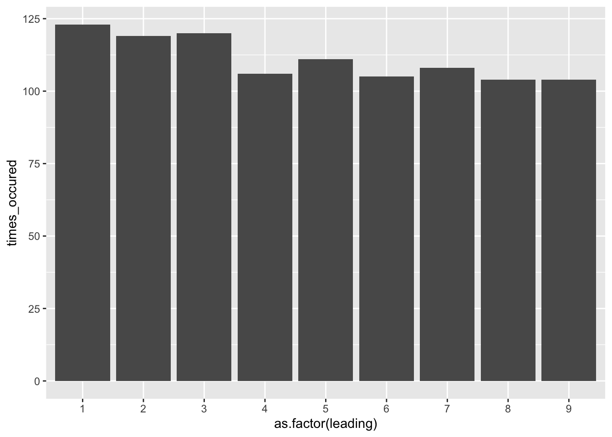

Chapter 9 Test
Testing data is the act of isolating high-risk records that meet criteria. While generally the intent of data analytics within auditing is to gain 100% population coverage and associated assurance, what will inevitably happen is that process deviations are revealed as items are detected. No process is bullet-proof and exception free, and therefore the auditor should have a founded idea of their level of risk tolerance prior to testing. Testing data will then help auditors articulate the nature of the exceptions and the overall risk level.
Auditors must recognize that not all tests (and lines that meet these tests) immediately ascertain that the control has failed or that something suspicious has occurred. Rather, it points to items that require further inspection and judgment. By iterating your workflow, you will be able to reduce the incidence of false positives and increase your detection rate, allowing you to focus on follow-up of higher-risk activity.
For this section we will use the company GL database.
library(dplyr)
library(tidyr)
library(lubridate)
library(DBI)
library(ggplot2)
library(gt) # Used for formatting outputs
library(pryr) # Used to analyze encoding in text chapter
library(stringi) # specialized string processing
dir.create("data", showWarnings = FALSE)
download.file(url = "https://github.com/jonlinca/auditanalytics/raw/master/data/rauditanalytics.sqlite",
destfile = "data/rauditanalytics.sqlite", mode = "wb")
con <- dbConnect(RSQLite::SQLite(), "data/rauditanalytics.sqlite")
gl <- tbl(con, 'gl') %>%
collect() %>%
mutate(gl_date = as_date(gl_date, origin = '1970-01-01'),
paid_date = as_date(paid_date, origin = '1970-01-01'),
invoice_date = as_date(invoice_date, origin = '1970-01-01')) %>%
select(-gl_date_char)
dbDisconnect(con)Our primary commands for this chapter will be mutate() and filter(). The mutate() command is useful for testing data, as it allows the auditor to add features and/or criteria to their testing. After records have been identified, filter() will extract the rows matching criteria.
While you may able to directly filter() rows based on criteria, you may find it more effective to instead create the new fields with mutate() that match the filter criteria. My style for documenting tests is to create any additional features needed, and then create a corresponding test column, with t_ as the prefix, and isolate for these invoices to perform inspection and follow-up. This has benefits in the long run, including:
- Keeping all the tests on the same record allows for an easier way to detect any row that met multiple criteria,
- It is straightforward to extract the rows that meets a test, and
- Each new column related to a specific a criteria is akin to feature engineering, enabling the reuse of the tests for machine learning applications.
There are practical reasons why you may need to create separate data frame objects, so do not prescribe exclusively to this method for extremely long or sophisticated steps. In cases when you have to perform multiple steps to get to your answer, it is advisable to bring the final result back into an overall reference table.
9.1 Amount-based tests
9.1.1 Above threshold
The most classical test is to test items that meet or exceed a material value.
gl %>%
mutate(t_over_te = amount >= 60000) %>%
filter(t_over_te) %>%
select(je_num, amount, everything())## # A tibble: 2 x 9
## je_num amount gl_date vendor_id account invoice_date description paid_date
## <int> <dbl> <date> <int> <chr> <date> <chr> <date>
## 1 140 96355. 2019-12-19 2211 exp_ma… 2019-12-12 Packaging … 2020-01-18
## 2 693 88524. 2019-08-13 2726 exp_ma… 2019-08-06 Quality co… 2019-08-16
## # … with 1 more variable: t_over_te <lgl>When performing amount or threshold testing, you may be more interested in the actual magnitude, and not necessarily the direction. This is especially true within accounting matters, where the implication of negative and positive amounts change depending on the transaction - i.e., a debit or a credit transaction, or affecting a balance sheet or income statement account can tell a very different story.
In these cases, you may want to consider using absolute values as the comparison. This allows you to capture the magnitude of the change:
## # A tibble: 4 x 9
## je_num amount gl_date vendor_id account invoice_date description
## <int> <dbl> <date> <int> <chr> <date> <chr>
## 1 140 96355. 2019-12-19 2211 exp_ma… 2019-12-12 Packaging …
## 2 140 -96355. 2019-12-19 NA liab_a… 2019-12-12 Packaging …
## 3 693 88524. 2019-08-13 2726 exp_ma… 2019-08-06 Quality co…
## 4 693 -88524. 2019-08-13 NA liab_a… 2019-08-06 Quality co…
## # … with 2 more variables: paid_date <date>, t_over_te <lgl>9.1.2 Round numbers
In forensic accounting, auditors tend to take the position that transactions rarely end in whole dollars, especially if they end in multiples of 5, or even in multiples of tens.
Detection of these is contingent on the use of %%, better known as the modulo operator. It will calculate the remainder of a division calculation; dividing 1.50 by 1 will give you a remainder of 0.5.
## [1] 0.5This same approach can be used to detect if a transaction is round, i.e. has no ‘cents’ in it. How you decide to apply this can be useful in many cases. For example, finding a transaction that happens to be cleanly in the ‘thousands’, perform the modulo by the corresponding amount and look for results where the remainder is 0.
## [1] 0Or even a round five number, which has its use cases when it comes to things like gift cards or tipping at restaurants:
## [1] 0When implementing as a test, I’d encourage creating multiple tests to see which test it matched, and then detect these variations together:
gl %>%
mutate(t_round_5 = amount %% 5 == 0,
t_round_10 = amount %% 10 == 0,
t_round_100 = amount %% 100 == 0,
t_round_1000 = amount %% 1000 == 0) %>%
filter_at(vars(starts_with("t_round")), any_vars(.)) %>%
select(je_num, amount, starts_with("t_round"))## # A tibble: 2 x 6
## je_num amount t_round_5 t_round_10 t_round_100 t_round_1000
## <int> <dbl> <lgl> <lgl> <lgl> <lgl>
## 1 621 12800 TRUE TRUE TRUE FALSE
## 2 621 -12800 TRUE TRUE TRUE FALSE9.2 Date-based tests
9.2.1 Weekend testing
As a typical office business (along with office activities) generally happen on the weekday - that is, Monday through Friday. We may be interested in selecting journal entries from a sample of activities that occurred on the weekend. To test this, we can use the lubridate package to determine what day of week our entry falls upon:
gl <- gl %>%
mutate(day_of_week = wday(gl_date, label = TRUE), # Label is useful if you tend to forget what each number means
t_weekend = day_of_week %in% c('Sat', 'Sun'))
gl %>%
filter(t_weekend) %>%
head()## # A tibble: 6 x 10
## je_num amount gl_date vendor_id account invoice_date description
## <int> <dbl> <date> <int> <chr> <date> <chr>
## 1 54 35758. 2019-01-12 2612 exp_ma… 2019-01-02 Face mask …
## 2 54 -35758. 2019-01-12 NA liab_a… 2019-01-02 Face mask …
## 3 102 50135. 2019-01-12 2726 exp_ma… 2019-01-05 Medical gr…
## 4 102 -50135. 2019-01-12 NA liab_a… 2019-01-05 Medical gr…
## 5 223 50128. 2019-01-12 2211 exp_ma… 2019-01-05 Packaging …
## 6 223 -50128. 2019-01-12 NA liab_a… 2019-01-05 Packaging …
## # … with 3 more variables: paid_date <date>, day_of_week <ord>, t_weekend <lgl>9.2.2 Cutoff testing
When transactions are near the end of the month (or the end of the year), cutoff testing helps establish that the transactions were recorded within the correct time period. Testing these may require selecting invoices close to month end.
Similar to how we calculate the period using floor_date(), we can take any date and transform it with ceiling_date() which will calculate the last date of the month. Then we can test to see if a date falls within the range as needed.
gl %>%
mutate(end_of_month = ceiling_date(gl_date, unit = 'month')) %>%
select(gl_date, end_of_month) %>%
head()## # A tibble: 6 x 2
## gl_date end_of_month
## <date> <date>
## 1 2019-12-02 2020-01-01
## 2 2019-12-02 2020-01-01
## 3 2019-11-28 2019-12-01
## 4 2019-11-28 2019-12-01
## 5 2019-04-09 2019-05-01
## 6 2019-04-09 2019-05-01This is close to our desired result, but all these dates are representative of the beginning of the following month. To transform dates, simply use the unit as desired and treat it like a math calculation. As all these dates are one day ahead, a days difference calculation will suffice:
gl <- gl %>%
mutate(end_of_month = ceiling_date(gl_date, unit = 'month') - days(1))
gl %>%
select(gl_date, end_of_month) %>%
head()## # A tibble: 6 x 2
## gl_date end_of_month
## <date> <date>
## 1 2019-12-02 2019-12-31
## 2 2019-12-02 2019-12-31
## 3 2019-11-28 2019-11-30
## 4 2019-11-28 2019-11-30
## 5 2019-04-09 2019-04-30
## 6 2019-04-09 2019-04-30And to detect which lines are close to month end, simply calculate the difference between the end of month and the original date, keeping only dates very close to the end of the month:
gl %>%
mutate(t_cutoff = (end_of_month - gl_date) <= 1) %>% # Find entries on or one day prior to month end
filter(t_cutoff) %>%
select(je_num, gl_date, t_cutoff, everything())## # A tibble: 136 x 12
## je_num gl_date t_cutoff amount vendor_id account invoice_date description
## <int> <date> <lgl> <dbl> <int> <chr> <date> <chr>
## 1 4 2019-10-30 TRUE 20037. 2612 exp_ma… 2019-10-20 Paper
## 2 4 2019-10-30 TRUE -20037. NA liab_a… 2019-10-20 Paper
## 3 6 2019-01-31 TRUE 13603. 2726 exp_ma… 2019-01-24 Medical gr…
## 4 6 2019-01-31 TRUE -13603. NA liab_a… 2019-01-24 Medical gr…
## 5 11 2019-07-30 TRUE 3000. 2612 exp_ma… 2019-07-20 Paper
## 6 11 2019-07-30 TRUE -3000. NA liab_a… 2019-07-20 Paper
## 7 31 2019-04-29 TRUE 9931. 2211 exp_co… 2019-04-14 Advisory s…
## 8 31 2019-04-29 TRUE -9931. NA liab_a… 2019-04-14 Advisory s…
## 9 44 2019-02-28 TRUE 3838. 2211 exp_ma… 2019-02-21 Packaging …
## 10 44 2019-02-28 TRUE -3838. NA liab_a… 2019-02-21 Packaging …
## # … with 126 more rows, and 4 more variables: paid_date <date>,
## # day_of_week <ord>, t_weekend <lgl>, end_of_month <date>9.2.3 Age
Aging invoices is generally a system-ran report out of the accounting system. Independently testing these reports is one of the strongest forms of assurance, which requires an understanding of the underlying data, including calculation accuracy and completeness.
At its core, an aging calculation is the comparison of one date to another certain date, and then aggregating the total amount by buckets indicating a range of days. However, it gets complicated rather quick because of how different systems implement aging:
- Which dates are being compared - invoice dates, entry dates, paid dates and/or due dates?
- Speaking of due dates, are you able to calculate a due date on a per-vendor (or even, per invoice) basis?
- Are you able to run a report ‘as-of’? The as-of date is intended to help understand the outstanding balances at a specific point of time. Some accounting systems have insufficient information captured, meaning a backdated entered invoice (perhaps to a prior period) may affect the accuracy of a previous report.
We will initially filter our data and only keep valid invoices, by filtering on records that are related to materials:
gl %>%
filter(account == 'exp_materials_6000') %>% # In scope invoices for aging
select(je_num, vendor_id, gl_date, invoice_date, paid_date)## # A tibble: 952 x 5
## je_num vendor_id gl_date invoice_date paid_date
## <int> <int> <date> <date> <date>
## 1 1 2211 2019-12-02 2019-11-25 2020-01-01
## 2 2 2612 2019-11-28 2019-11-18 2019-12-21
## 3 3 2612 2019-04-09 2019-03-30 2019-05-02
## 4 4 2612 2019-10-30 2019-10-20 2019-11-22
## 5 5 2612 2019-06-04 2019-05-25 2019-06-27
## 6 6 2726 2019-01-31 2019-01-24 2019-02-03
## 7 7 2726 2019-10-21 2019-10-14 2019-10-24
## 8 8 2211 2019-04-24 2019-04-17 2019-05-24
## 9 9 2726 2019-07-10 2019-07-03 2019-07-13
## 10 10 2211 2019-06-13 2019-06-06 2019-07-13
## # … with 942 more rowsIn our GL data set, we have captured invoices (denoted as transactions against expense accounts), as well as the GL date (the day the company received the invoice), the invoice date as written by the supplier, and the date the invoice was paid.
With a better understanding of the dates, we can now focus on reproducing an accurate report:
- An invoice was recognized in our system as per the
gl_date, - An invoice was considered fully paid as of the
paid_date, and - The definition of age in our system is based off the
invoice_dateand an user-chosen ‘as-of’ date.
We will use August 1, 2019 as our as-of date, and only include invoices that were recognized on or prior to then.
as_of_date <- as.Date('2019-08-01')
gl %>%
filter(account == 'exp_materials_6000') %>% # In scope invoices for aging
select(je_num, vendor_id, gl_date, invoice_date, paid_date) %>%
filter(gl_date <= as_of_date) # Only choose recognized invoices as of a date## # A tibble: 571 x 5
## je_num vendor_id gl_date invoice_date paid_date
## <int> <int> <date> <date> <date>
## 1 3 2612 2019-04-09 2019-03-30 2019-05-02
## 2 5 2612 2019-06-04 2019-05-25 2019-06-27
## 3 6 2726 2019-01-31 2019-01-24 2019-02-03
## 4 8 2211 2019-04-24 2019-04-17 2019-05-24
## 5 9 2726 2019-07-10 2019-07-03 2019-07-13
## 6 10 2211 2019-06-13 2019-06-06 2019-07-13
## 7 11 2612 2019-07-30 2019-07-20 2019-08-22
## 8 12 2726 2019-06-19 2019-06-12 2019-06-22
## 9 16 2211 2019-01-18 2019-01-11 2019-02-17
## 10 17 2612 2019-02-05 2019-01-26 2019-02-28
## # … with 561 more rowsWe can also remove any paid invoices too, as they’re no longer aged as-of that date. Depending when you are running your report, an invoice may could either be paid or not paid yet.
gl %>%
filter(account == 'exp_materials_6000') %>% # In scope invoices for aging
select(je_num, vendor_id, gl_date, invoice_date, paid_date) %>%
filter(gl_date <= as_of_date) %>% # Only choose recognized invoices as of a date
filter(paid_date >= as_of_date | is.na(paid_date)) # Keep invoices that were not paid by the as-of date, or not paid at all yet## # A tibble: 71 x 5
## je_num vendor_id gl_date invoice_date paid_date
## <int> <int> <date> <date> <date>
## 1 11 2612 2019-07-30 2019-07-20 2019-08-22
## 2 18 2612 2019-07-23 2019-07-13 2019-08-15
## 3 20 2211 2019-07-23 2019-07-16 2019-08-22
## 4 22 2612 2019-07-18 2019-07-08 2019-08-10
## 5 38 2211 2019-07-25 2019-07-18 2019-08-24
## 6 57 2211 2019-07-12 2019-07-05 2019-08-11
## 7 75 2211 2019-07-08 2019-07-01 2019-08-07
## 8 85 2612 2019-07-15 2019-07-05 2019-08-07
## 9 88 2612 2019-07-31 2019-07-21 2019-08-23
## 10 97 2612 2019-07-30 2019-07-20 2019-08-22
## # … with 61 more rowsHaving isolated our invoices, we can now calculate the number of aged days:
gl %>%
filter(account == 'exp_materials_6000') %>% # In scope invoices for aging
filter(gl_date <= as_of_date) %>% # Only choose recognized invoices as of a date
filter(paid_date >= as_of_date | is.na(paid_date)) %>% # Keep invoices that are not paid by the as-of date, or not paid at all yet
mutate(aged_days = as.numeric(as_of_date - invoice_date)) %>%
select(invoice_date, paid_date, aged_days)## # A tibble: 71 x 3
## invoice_date paid_date aged_days
## <date> <date> <dbl>
## 1 2019-07-20 2019-08-22 12
## 2 2019-07-13 2019-08-15 19
## 3 2019-07-16 2019-08-22 16
## 4 2019-07-08 2019-08-10 24
## 5 2019-07-18 2019-08-24 14
## 6 2019-07-05 2019-08-11 27
## 7 2019-07-01 2019-08-07 31
## 8 2019-07-05 2019-08-07 27
## 9 2019-07-21 2019-08-23 11
## 10 2019-07-20 2019-08-22 12
## # … with 61 more rowsNow the most complex part is making buckets for these ages. A rather brute force way is to create a field with the range it falls in, and then eventually pivoting on it:
aged_wip <- gl %>%
filter(account == 'exp_materials_6000') %>% # In scope invoices for aging
select(je_num, account, vendor_id, gl_date, invoice_date, paid_date) %>%
filter(gl_date <= as_of_date) %>% # Only choose recognized invoices as of a date
filter(paid_date >= as_of_date | is.na(paid_date)) %>% # Keep invoices that are not paid by the as-of date, or not paid at all yet
mutate(aged_days = as.numeric(as_of_date - invoice_date)) %>%
select(aged_days)
aged_wip %>%
mutate(aging_bucket = case_when(
aged_days < 15 ~ "Current",
aged_days < 30 ~ "15 - 30",
aged_days < 90 ~ "30 - 59",
TRUE ~ "60+"
))## # A tibble: 71 x 2
## aged_days aging_bucket
## <dbl> <chr>
## 1 12 Current
## 2 19 15 - 30
## 3 16 15 - 30
## 4 24 15 - 30
## 5 14 Current
## 6 27 15 - 30
## 7 31 30 - 59
## 8 27 15 - 30
## 9 11 Current
## 10 12 Current
## # … with 61 more rowsAnother useful method is to use the cut() function, which will take the intervals you specify (aged days) and place each row into the category. The labels look a bit different - inclusive boundaries are ( while exclusive boundaries are ]:
## # A tibble: 71 x 2
## aged_days aging_bucket
## <dbl> <fct>
## 1 12 (0,15]
## 2 19 (15,30]
## 3 16 (15,30]
## 4 24 (15,30]
## 5 14 (0,15]
## 6 27 (15,30]
## 7 31 (30,60]
## 8 27 (15,30]
## 9 11 (0,15]
## 10 12 (0,15]
## # … with 61 more rowsYou can choose which approach best fits your style. With all the pieces, we can now create the aging report, aggregated by vendor. First, lets only keep the variables we want to pivot:
aged <- gl %>%
filter(account == 'exp_materials_6000') %>% # In scope invoices for aging
filter(gl_date <= as_of_date) %>% # Only choose recognized invoices as of a date
filter(paid_date >= as_of_date | is.na(paid_date)) %>% # Keep invoices that are not paid by the as-of date, or not paid at all yet
mutate(aged_days = as.numeric(as_of_date - invoice_date)) %>%
mutate(aging_bucket = case_when(
aged_days < 15 ~ "Current",
aged_days < 30 ~ "15 - 30",
aged_days < 90 ~ "30 - 59",
TRUE ~ "60+"
)) %>%
select(vendor_id, amount, aging_bucket)
print(aged)## # A tibble: 71 x 3
## vendor_id amount aging_bucket
## <int> <dbl> <chr>
## 1 2612 3000. Current
## 2 2612 8436. 15 - 30
## 3 2211 725. 15 - 30
## 4 2612 5037. 15 - 30
## 5 2211 7412. Current
## 6 2211 11461. 15 - 30
## 7 2211 2206. 30 - 59
## 8 2612 2491. 15 - 30
## 9 2612 294. Current
## 10 2612 13593. Current
## # … with 61 more rowsSince our typical aging report has vendors along the left (the unique identifier for id_cols argument), aging buckets along the top (the names we want to spread across with names_from) and the amount is a summation of the valid values (values_from and also values_fn), we can use pivot_wider() to recreate our report:
aged %>%
pivot_wider(id_cols = vendor_id, names_from = aging_bucket, values_from = amount, values_fn = sum)## # A tibble: 3 x 4
## vendor_id Current `15 - 30` `30 - 59`
## <int> <dbl> <dbl> <dbl>
## 1 2612 58163. 57468. 41684.
## 2 2211 120974. 114429. 136315.
## 3 2726 105586. NA NA9.3 Basic Statistical tests
In the exploration of data, we highlighted that exploring your data using various statistical functions are useful for helping understand the shape of your data. After doing so, you can then apply statistical methods directly in your testing to help select samples.
9.3.1 Outliers based on amount
An outlier is an observation that lies an abnormal distance from other values in a random sample from a population. In a sense, this definition leaves it up to the analyst (or a consensus process) to decide what will be considered abnormal. Before abnormal observations can be singled out, it is necessary to characterize normal observations. (NIST/Sematech E-Handbook of Statistical Methods, n.d.)
Our general approach to using statistical tests is to bring attention to “abnormal” entries in our data. Abnormal may be different depending on the situation, but items that stand apart from the rest are of audit interest.
Outliers are very specific to the dataset we are analyzing, and are highly dependent on the nature and structure of the work we have.
The most basic detection of extreme outliers can be done on an amount, looking for material transactions, by using the quantiles and IQRs. Quantiles indicate the thresholds where amounts may be in the bottom 25% or above the top 75% of data points. The IQR is defined as the difference between the upper 75% quantile and lower 25% quantile (i.e. the 3rd quartile and 1st quartile).
The extreme outlier test is defined as points less than the 25% quantile minus 1.5 * inter quartile range (IQR), or above the 75% quantile plus 1.5 * IQR.
In this case, we want to detect items greater than the extreme upper outlier:
# Detect amounts in the top 25% of transactions
top_75 <- quantile(abs(gl$amount))[4] # This is the 3st quartile, or the 75% quantile
iqr <- IQR(abs(gl$amount))
upper_extreme_outlier <- top_75 + iqr * 1.5
print(paste0("The upper_extreme_outlier is $", upper_extreme_outlier))## [1] "The upper_extreme_outlier is $31929.19125"gl %>%
dplyr::filter(amount > upper_extreme_outlier) %>%
select(je_num, amount, account, description) %>%
arrange(description)## # A tibble: 46 x 4
## je_num amount account description
## <int> <dbl> <chr> <chr>
## 1 5 43140. exp_materials_6000 Blue dye
## 2 430 37341. exp_materials_6000 Blue dye
## 3 825 36918. exp_materials_6000 Blue dye
## 4 70 32584. exp_materials_6000 Fabric cutting machines
## 5 427 44950. exp_materials_6000 Fabric cutting machines
## 6 54 35758. exp_materials_6000 Face mask elastics
## 7 531 42785. exp_materials_6000 Face mask elastics
## 8 680 36860. exp_materials_6000 Fancy cloth prints
## 9 832 37269. exp_materials_6000 Fancy cloth prints
## 10 66 51347. exp_materials_6000 Medical grade filters
## # … with 36 more rows9.3.2 Outliers based on amounts and other factors
By performing a test based solely on amounts alone, other meaningful data is ignored. The nuances of specific subsets of data are lost due to an overarching amount analysis, which could be too crude.
There are other useful features in our dataset we can use to potentially segment the data. There is the account information, which can be interpreted as consistent categories of information. There are also descriptions, which help us understand more granular detail about the nature of the transaction. A combination of any identifying categories or factors could be used to identify outliers.
If we focus our analysis on both the description and amount, we can identify amount extreme outliers on a more unique basis. First, we need to group the descriptions and independently calculate the upper_extreme_outlier on a per group basis:
outliers_per_desc <- gl %>%
group_by(description) %>%
summarize(count = n(),
upper_limit = quantile(abs(amount))[4],
iqr = IQR(abs(amount))) %>%
mutate(upper_extreme_outlier = upper_limit + 1.5 * iqr)## `summarise()` ungrouping output (override with `.groups` argument)## # A tibble: 25 x 5
## description count upper_limit iqr upper_extreme_out…
## <chr> <int> <dbl> <dbl> <dbl>
## 1 Advisory fee for face mask manuf… 10 9277. 1.84e2 9552.
## 2 Advisory services for tax expats 24 9897. 3.53e2 10427.
## 3 Audit fees for big four audit fi… 10 9788. 4.73e2 10497.
## 4 Blue dye 80 14581. 1.20e4 32509.
## 5 Buffet 4 156. 3.76e1 212.
## 6 Catering 8 120. 7.26e1 229.
## 7 Consulting fee on how to adhere … 6 9784. 5.14e2 10556.
## 8 Fabric cutting machines 68 15591. 1.31e4 35204.
## 9 Face mask elastics 74 13461. 1.10e4 30007.
## 10 Facilitation payment to agent fi… 2 9715. 0. 9715.
## # … with 15 more rowsUsing this, we can quickly look up the upper_extreme_outlier in our gl table, and reduce our scope to only filter amounts greater than the limit per description entry.
gl %>%
left_join(outliers_per_desc, by = 'description') %>%
filter(amount >= upper_extreme_outlier) %>%
select(je_num, amount, account, description, upper_extreme_outlier) %>%
group_by(description) %>%
slice_max(order_by = amount, n = 5)## # A tibble: 33 x 5
## # Groups: description [14]
## je_num amount account description upper_extreme_out…
## <int> <dbl> <chr> <chr> <dbl>
## 1 975 9834. exp_consultin… Advisory fee for face mask … 9552.
## 2 5 43140. exp_materials… Blue dye 32509.
## 3 430 37341. exp_materials… Blue dye 32509.
## 4 825 36918. exp_materials… Blue dye 32509.
## 5 427 44950. exp_materials… Fabric cutting machines 35204.
## 6 531 42785. exp_materials… Face mask elastics 30007.
## 7 54 35758. exp_materials… Face mask elastics 30007.
## 8 755 9715. exp_consultin… Facilitation payment to age… 9715.
## 9 335 52.2 exp_meals_7000 Italian food restaurant 52.2
## 10 309 1630. exp_materials… Meals for launch celebration 1630.
## # … with 23 more rowsThe results are different than the outliers based solely on the amount, and are a good evaluation on a per-group basis.
9.4 Unusual pattern and behaviours
9.4.1 Benford’s Law analysis
The general principle of fraud detection is that individuals behave differently when they attempt to conceal, manipulate or make up information, as the fictional creation of numbers by people is different than how the accounting world behaves. As a result, these behaviours tend to stand out when certain tests are applied to them.
Benford’s Law is a common application in the accounting and auditing, as it is a quick litmus test to see if there are symptoms of anomalies in a dataset. The law generally states that in a set of values, the leading digit of 1 will occur more often than the leading digit of 2, the leading digit of 2 will naturally occur more often than the leading digit of 3, etc.. With a sufficiently large population, you can reasonably estimate the number of times a leading digit should appear a certain number of times.
Think about the general working population and hourly wages. You could reasonably assume that its relatively accessible to get a job that pays $10-$19/hr. Its more difficult to get a job with $20-$29/hr wage, and even more so to get a job with $90-$99/hr wage.
What is fascinating is that once you reach the next digit, the wages all start with 1’s again, and it takes a lot of effort to get out of the $100-$199/hr band. This type of scaling means its increasingly harder for individuals to get a higher hourly salary. While there are some lucky folks that earn $200/hr, those individuals are more rare than those who earn $20/hr.
With Benford’s Law and applying the concept to a population of natural numbers, then the concept of leading digits makes intuitive sense. There will be more salaries that start with 1, than with 2, etc. You could estimate that a reasonable proportion of hourly wages could look like this:
If we assume the first dataset is an example of a generally real world dataset, then lets look at a completely fictional dataset. For example, lets say in a range of 1 to 999, we randomly sample 1000 numbers and apply the Benford Law, we will notice the following:
benford_sample <- data.frame(seq = sample(1:999, 1000, replace = TRUE))
benford_sample$leading <- as.numeric(substr(benford_sample$seq, 1, 1))
benford_sample %>%
group_by(leading) %>%
summarize(times_occured = n()) %>%
ggplot(aes(x = as.factor(leading), y = times_occured)) +
geom_col()## `summarise()` ungrouping output (override with `.groups` argument)
Notice how uniform the bars appear. The sample we chose was essentially made-up numbers between 1 and 999, the computer would choose these with equal probability, unlike the population of hourly wages, leading to a graph that does not follow the curve of Benford’s Law.
9.4.1.1 Applying Benford’s Law
Several statistical tests exist to determine whether or not a population conforms to Benford’s Law. While chi-square tests are numerically ‘authoritative’, remember that the individuals samples will indicate whether or not fraud truly exists.
In application, Benford’s Law requires professional judgment, and there can be any number of reasons why a population doesn’t follow it. My successful experiences as an auditor have been to chart the actual proportion of leading digits against a curve of the expected outcome, and determine if there are any business reasons that may rationalize a pattern in the data before I perform further sampling.
To calculate the curve, you need to determine the likelihood that each digit should appear. The expected proportion for each digit can be calculated as follows:
\[log_{10}\left( 1 + \frac{1}{d}\right)\]
In R, this is represented as:
## [1] 0.30103We can create a quick reference curve of the leading digits for Benford’s Law:
benford_curve <- data.frame(digit = 1:9) %>%
mutate(prob = log10(1 + 1 / digit),
curve = 'benford')
ggplot(benford_curve, aes(x = as.factor(digit), y = prob, group = curve)) +
geom_line(color = 'red') +
geom_point(color = 'red')We can then take any of our populations, create the bar chart, and then apply the expected proportions of Benford’s Law to it. Lets take our GL database and create the proportion of how often each leading digit occurs. Note we will try to follow the same variable structure as benford_curve, as we will combine these on the same chart.
gl %>%
mutate(digit = as.numeric(substr(amount, 1, 1))) %>%
group_by(digit) %>%
summarize(times_occured = n()) %>%
mutate(prop = times_occured / sum(times_occured),
curve = 'actual') %>%
ggplot(aes(x = as.factor(digit), y = prop)) +
geom_col()Notice in our chart that there are several NAs. In our dataset, we have several negative numbers (as journal entry credits as represented with negatives), and extracting the first character using substr() will retrieve the negative symbol. You may choose to perform Benford’s Law on the positive and negative numbers, separately or together, transforming the negative numbers with abs(). You can also choose to exclude them, as I do below:
actuals <- gl %>%
filter(amount > 0) %>%
mutate(digit = as.numeric(substr(amount, 1, 1))) %>%
group_by(digit) %>%
summarize(times_occured = n()) %>%
mutate(prop = times_occured / sum(times_occured),
curve = 'actual') %>%
ggplot(aes(x = as.factor(digit), y = prop)) +
geom_col()
actualsNow that we have the actual proportions, lets layer on the benford_curve we created:
actuals +
geom_line(data = benford_curve, aes(x = as.factor(digit), y = prob, group = curve), color = 'red') +
geom_point(data = benford_curve, aes(x = as.factor(digit), y = prob), color = 'red')When you reach this stage, take a moment to pause and understand the business, and if there may be any potential behavours to cause potential curve differences. For example, if there is an approval ‘limit’ that exists at $1000, you may see a spike of entries at the 9 leading digit.
As with any statistical test, Benford’s Law will not give you an answer as to why there may be fraud. There may be both legitimate reasons for why populations do not follow Benford’s Law. A higher than expected proportion of leading digits starting with 9 does not mean those numbers starting with 9 are fraudulent.
9.4.1.2 More leading digits?
You can get any number of leading digits to apply Benford’s Law - to do so, you need to start on the lowest possible value for the number of digits desired, to remove leading zeros, and extend the sequence to the highest number before a new digit must be added. For example, two leading digits would have a sequence of numbers created from 10:99, and three leading digits would be 100:999:
benford_curve_leading2 <- data.frame(digit = 10:99) %>%
mutate(prob = log10(1 + 1 / digit),
curve = 'benford')
head(benford_curve_leading2)## digit prob curve
## 1 10 0.04139269 benford
## 2 11 0.03778856 benford
## 3 12 0.03476211 benford
## 4 13 0.03218468 benford
## 5 14 0.02996322 benford
## [ reached 'max' / getOption("max.print") -- omitted 1 rows ]## digit prob curve
## 85 94 0.004595752 benford
## 86 95 0.004547628 benford
## 87 96 0.004500501 benford
## 88 97 0.004454341 benford
## 89 98 0.004409119 benford
## [ reached 'max' / getOption("max.print") -- omitted 1 rows ]9.4.2 Relative size factor (RSF)
The Relative Size Factor test is the comparison of “large amounts to a benchmark to see how large they are relative to some norm.” (Identifying Anomalies Using the Relative Size Factor Test 2012). The calculation is done by taking the largest value divided by the second largest value within a group. Examples of groups include a listing of payables for a vendor, or the expenses completed by an employee. A larger RSF indicates that there was a larger proportional between the largest and second largest invoice.
One test is to determining the vendors top two invoice amounts and their RSF ratio. Recall the group_by() will perform the calculation at the level requested - adding slice_max() will select the highest row of values by the group.
top_two_per_vendor <- gl %>%
filter(account == 'exp_materials_6000') %>%
select(vendor_id, je_num, amount) %>%
group_by(vendor_id) %>%
slice_max(amount, n = 2)
top_two_per_vendor## # A tibble: 6 x 3
## # Groups: vendor_id [3]
## vendor_id je_num amount
## <int> <int> <dbl>
## 1 2211 140 96355.
## 2 2211 555 57258.
## 3 2612 583 47748.
## 4 2612 337 46066.
## 5 2726 693 88524.
## 6 2726 756 57567.Since we’ve identified the top two invoices per vendor_id, we’ve artifically also created new max and mins for the group, which we can use to calculate our RSF:
## # A tibble: 3 x 2
## vendor_id rsf
## <int> <dbl>
## 1 2211 1.68
## 2 2612 1.04
## 3 2726 1.54This test may reveal invoices that may have been miskeyed with extra zeros, or conversely, identify large one-time orders.
9.4.3 Duplicate Invoices
Detection of duplicates are a seemingly simple concept. For invoices, find an invoice with the same invoice date and same amount. Experience will tell you that detecting suspected duplicates and generating a list is easy, and unfortunately there will be a significant number of false positives to wade through. We will go through the basics of duplicate detection with invoices, and then determine additional strategies you can apply to rule out unlikely samples. These same strategies can be applied across any type of payable.
The initial approach is built off the Same-Same-Same or Same-Same-Different duplicate detection approach (Identifying Fraud Using Abnormal Duplications Within Subsets 2012). Essentially, you examine for factors where the may be similarities in the key fields, and potentially differences in one of them. Here is a fictional dataset to illustrate how data may be represented.
Note that despite the name, there can be as many ‘Same’ key fields as needed.
invoices <- data.frame(system_id = 1:7,
invoice_id = c('156', '156', '157A', '157B', '158', '159', '160'),
date = c(as.Date('2019-01-01'), as.Date('2019-01-01'), as.Date('2019-01-02'), as.Date('2019-01-02'), as.Date('2019-01-03'), as.Date('2019-01-03'), as.Date('2019-01-04')),
amount = c(1000, 1000, 2500, 2500, 3000, 3000, 4000),
acctcode = c(6100, 6100, 6200, 6200, 6100, 6200, 6100))
invoices %>%
gt() # We'll hide this table-making code in future chunks. For now, its going to make our table prettier| system_id | invoice_id | date | amount | acctcode |
|---|---|---|---|---|
| 1 | 156 | 2019-01-01 | 1000 | 6100 |
| 2 | 156 | 2019-01-01 | 1000 | 6100 |
| 3 | 157A | 2019-01-02 | 2500 | 6200 |
| 4 | 157B | 2019-01-02 | 2500 | 6200 |
| 5 | 158 | 2019-01-03 | 3000 | 6100 |
| 6 | 159 | 2019-01-03 | 3000 | 6200 |
| 7 | 160 | 2019-01-04 | 4000 | 6100 |
9.4.3.1 Same-Same-Same
To run our Same-Same-Same test, we would collect the key fields we would like to use. In this case, the invoice, date and amount could qualify as key fields - Same Invoice ID, Same Date, Same Amount. You would summarize by how often that combination appears, only keeping items that match more than once:
dupes_set1 <- invoices %>%
group_by(invoice_id, date, amount) %>%
summarize(times_occured = n()) %>%
filter(times_occured > 1) %>%
ungroup()| invoice_id | date | amount | times_occured |
|---|---|---|---|
| 156 | 2019-01-01 | 1000 | 2 |
To keep track of which invoices meet specific criteria, we will then join this information to the main dataset. This way, you’ll maintain a library of invoices that meet multiple criteria. First off, lets keep keep all the duplicate keys we summarized on, plus a unique identifier so we can match the pairs:
dupes_set1 <- dupes_set1 %>%
ungroup() %>% # Remove the grouping aspect, which affects the ranking by row_number()
mutate(t_dupes1 = row_number()) | invoice_id | date | amount | times_occured | t_dupes1 |
|---|---|---|---|---|
| 156 | 2019-01-01 | 1000 | 2 | 1 |
Then bring it into our invoices dataset:
dupes_set1 <- dupes_set1 %>%
select(-times_occured) # Unneeded for final result
invoices <- invoices %>%
left_join(dupes_set1, by = c('invoice_id', 'date', 'amount'))| system_id | invoice_id | date | amount | acctcode | t_dupes1 |
|---|---|---|---|---|---|
| 1 | 156 | 2019-01-01 | 1000 | 6100 | 1 |
| 2 | 156 | 2019-01-01 | 1000 | 6100 | 1 |
| 3 | 157A | 2019-01-02 | 2500 | 6200 | NA |
| 4 | 157B | 2019-01-02 | 2500 | 6200 | NA |
| 5 | 158 | 2019-01-03 | 3000 | 6100 | NA |
| 6 | 159 | 2019-01-03 | 3000 | 6200 | NA |
| 7 | 160 | 2019-01-04 | 4000 | 6100 | NA |
9.4.3.2 Same-Same-Different
For the Same-Same-Different test, we have to add an extra step. We still collect the key fields we would like to use. In this case, perhaps we would like to check for duplicates on the same date and same amount, but now we’re looking for different invoice_ids. Therefore, Same Date, Same Amount, Different Invoice_id.
First, lets detect the duplicates on our key fields:
dupes_set2 <- invoices %>%
group_by(invoice_id, date, amount) %>%
summarize(times_occured = n()) %>%
ungroup()| invoice_id | date | amount | times_occured |
|---|---|---|---|
| 156 | 2019-01-01 | 1000 | 2 |
| 157A | 2019-01-02 | 2500 | 1 |
| 157B | 2019-01-02 | 2500 | 1 |
| 158 | 2019-01-03 | 3000 | 1 |
| 159 | 2019-01-03 | 3000 | 1 |
| 160 | 2019-01-04 | 4000 | 1 |
Then, you perform another group_by, but this time just on the ones that are the same. In this case, that would be Date and Amount.
dupes_set2 <- dupes_set2 %>% # Remove the grouping aspect, which is kept by default in dplyr
group_by(date, amount) %>% # Second set of reductions, but this time, find how many unique invoice ids there are per date-amount
summarize(times_occured = n()) %>%
filter(times_occured > 1) %>%
ungroup()| date | amount | times_occured |
|---|---|---|
| 2019-01-02 | 2500 | 2 |
| 2019-01-03 | 3000 | 2 |
This approach is unique but intuitive. By taking all possible ‘same’ combinations, we’ve effectively grouped any sort of duplicate invoice_id we may have already had. We then ungroup and resummarize without the invoice_id, which tells us how many times the invoice_id is different within the new group.
Lets save this information into our invoice table again:
dupes_set2 <- dupes_set2 %>%
mutate(t_dupes2 = row_number()) %>%
select(-times_occured)
invoices <- invoices %>%
left_join(dupes_set2, by = c('date', 'amount'))| system_id | invoice_id | date | amount | acctcode | t_dupes1 | t_dupes2 |
|---|---|---|---|---|---|---|
| 1 | 156 | 2019-01-01 | 1000 | 6100 | 1 | NA |
| 2 | 156 | 2019-01-01 | 1000 | 6100 | 1 | NA |
| 3 | 157A | 2019-01-02 | 2500 | 6200 | NA | 1 |
| 4 | 157B | 2019-01-02 | 2500 | 6200 | NA | 1 |
| 5 | 158 | 2019-01-03 | 3000 | 6100 | NA | 2 |
| 6 | 159 | 2019-01-03 | 3000 | 6200 | NA | 2 |
| 7 | 160 | 2019-01-04 | 4000 | 6100 | NA | NA |
The beauty of this method is that, after you’ve run all the scenarios you prefer, you can rapidly assess each invoice and see what duplicate criteria they match. Ideally, you would balance having tests that are very general (same date, same amount) with tests of high precision (same date, same amount, and different account codes).
9.4.3.3 Aggregating results
To derive the final list, becai effective to filter the results based on the dupes columns.
Starting with the invoices we’ve identified, we’ll first group by unique system_id we’ve created, allowing us to perform calculations on unique rows. To determine if any test did return something, we will take a sum of any number of columns that return a TRUE (with a value of 1 when coerced from logical to numeric). Then, we want to calculate this on multiple columns, specifically with the name starting with dupes, so we will use across() with starts_with().
invoices %>%
rowwise(system_id) %>%
mutate(dupes = sum(across(starts_with('t_dupes')) >= 1, na.rm = TRUE)) %>%
ungroup() %>%
filter(dupes > 0) %>%
gt()| system_id | invoice_id | date | amount | acctcode | t_dupes1 | t_dupes2 | dupes |
|---|---|---|---|---|---|---|---|
| 1 | 156 | 2019-01-01 | 1000 | 6100 | 1 | NA | 1 |
| 2 | 156 | 2019-01-01 | 1000 | 6100 | 1 | NA | 1 |
| 3 | 157A | 2019-01-02 | 2500 | 6200 | NA | 1 | 1 |
| 4 | 157B | 2019-01-02 | 2500 | 6200 | NA | 1 | 1 |
| 5 | 158 | 2019-01-03 | 3000 | 6100 | NA | 2 | 1 |
| 6 | 159 | 2019-01-03 | 3000 | 6200 | NA | 2 | 1 |
This approach is powerful, yet flexible. By maintaining our approach of having a main invoice dataset with all the matches, any new tests we add starting with the column name dupes will be included. For example, if we inserted a higher precision test of same invoice date, amount, and account code, we’ll see our counts go up:
dupes_set3 <- invoices %>%
group_by(date, amount, acctcode) %>%
summarize(times_occured = n()) %>%
filter(times_occured > 1) %>%
ungroup() %>% # Remove the grouping aspect, which affects the ranking by row_number()
mutate(t_dupes3 = row_number()) %>%
select(-times_occured)
invoices <- invoices %>%
left_join(dupes_set3, by = c('date', 'amount', 'acctcode'))
invoices %>%
rowwise(system_id) %>%
mutate(t_dupesmatched = sum(across(starts_with('t_dupes')) >= 1, na.rm = TRUE)) %>%
ungroup() %>%
filter(t_dupesmatched > 0) %>%
gt()| system_id | invoice_id | date | amount | acctcode | t_dupes1 | t_dupes2 | t_dupes3 | t_dupesmatched |
|---|---|---|---|---|---|---|---|---|
| 1 | 156 | 2019-01-01 | 1000 | 6100 | 1 | NA | 1 | 2 |
| 2 | 156 | 2019-01-01 | 1000 | 6100 | 1 | NA | 1 | 2 |
| 3 | 157A | 2019-01-02 | 2500 | 6200 | NA | 1 | 2 | 2 |
| 4 | 157B | 2019-01-02 | 2500 | 6200 | NA | 1 | 2 | 2 |
| 5 | 158 | 2019-01-03 | 3000 | 6100 | NA | 2 | NA | 1 |
| 6 | 159 | 2019-01-03 | 3000 | 6200 | NA | 2 | NA | 1 |
9.4.3.4 Ruling out false positives
Up to now, you’ve identified duplicates via the Same-Same-Same and Same-Same-Different methods. Perhaps in your own work, you’ve gone ahead and tested potential duplicates, and then realized there is some business logic you didn’t capture that may have nullified the potential duplicate, saving you time and effort.
A common reason for a false positive is that the company may have already received a refund for the invoice. In this case, its more practical to identify and remove invoices that have had refunds in the original invoice population prior to processing, using an anti_join(). For example, if invoice 156 with a system_id of 2 was already removed, you could refine the invoice population before executing additional tests.
refunds <- data.frame(system_id = 2) # A table of credits or refunds
new_invoices <- invoices %>%
anti_join(refunds, by = 'system_id') %>% # Remove refunds
select(system_id, invoice_id, date, amount, acctcode)
new_invoices %>%
gt()| system_id | invoice_id | date | amount | acctcode |
|---|---|---|---|---|
| 1 | 156 | 2019-01-01 | 1000 | 6100 |
| 3 | 157A | 2019-01-02 | 2500 | 6200 |
| 4 | 157B | 2019-01-02 | 2500 | 6200 |
| 5 | 158 | 2019-01-03 | 3000 | 6100 |
| 6 | 159 | 2019-01-03 | 3000 | 6200 |
| 7 | 160 | 2019-01-04 | 4000 | 6100 |
A duplicate may also be ruled out because because of a minor field that wasn’t used. If you examine lines 5 and 6, you’ll see that that this invoice was picked up because of the same date & amount, with a different invoice_id. You may have noticed that the acctcode is different, representing that the invoice was being allocated to a different cost center. After inquiring with the business, you may determine this behavior is normal. Its easier add another test to accommodate for this scenario, following the Same-Same-Different approach, to help increase the accuracy of test:
dupes_set4 <- invoices %>%
group_by(invoice_id, date, amount, acctcode) %>%
summarize(times_occured = n()) %>%
ungroup() %>% # Remove the grouping aspect, which is kept by default in dplyr
group_by(date, amount, acctcode) %>% # Second set of reductions, but this time, find how many unique invoice ids there are per date-amount
summarize(times_occured = n()) %>%
filter(times_occured > 1) %>%
ungroup() %>% # Remove the grouping aspect, which affects the ranking by row_number()
mutate(t_dupes4 = row_number()) %>%
select(-times_occured)
invoices <- invoices %>%
left_join(dupes_set4, by = c('date', 'amount', 'acctcode'))
invoices %>%
gt()| system_id | invoice_id | date | amount | acctcode | t_dupes1 | t_dupes2 | t_dupes3 | t_dupes4 |
|---|---|---|---|---|---|---|---|---|
| 1 | 156 | 2019-01-01 | 1000 | 6100 | 1 | NA | 1 | NA |
| 2 | 156 | 2019-01-01 | 1000 | 6100 | 1 | NA | 1 | NA |
| 3 | 157A | 2019-01-02 | 2500 | 6200 | NA | 1 | 2 | 1 |
| 4 | 157B | 2019-01-02 | 2500 | 6200 | NA | 1 | 2 | 1 |
| 5 | 158 | 2019-01-03 | 3000 | 6100 | NA | 2 | NA | NA |
| 6 | 159 | 2019-01-03 | 3000 | 6200 | NA | 2 | NA | NA |
| 7 | 160 | 2019-01-04 | 4000 | 6100 | NA | NA | NA | NA |
9.4.4 Detecting gaps in sequences
A sequential test is commonly used for cheques, specifically to determine which ones are missing from a cheque run. They are also useful for measuring a level of dependency that a vendor relies upon a company, assuming the vendor issue invoices sequentially as well.
As an example, lets say we create a register with 1000 cheques. You can start with any minimum and maximum range:
## [1] 1000## [1] 1020 2019And if we were to create a listing of all cheques we have written, we could simulate perhaps 50 cheques that were taken out:
To detect which cheques have been taken out, we can check the difference between our sets using setdiff() - that is, if we compare our original cheque register to the cheques issued, we can see which ones were missing:
## [1] 1026 1062 1079 1166 1201 1302 1375 1378 1385 1387 1455 1493 1503 1504 1510
## [ reached getOption("max.print") -- omitted 10 entries ]If you wanted to know which ones were sequential, you could check the differences between each missing cheque. In this case, it would be a lag() calculation first, to find the difference between each row:
## missing gap_between
## 1 1026 NA
## 2 1062 36
## 3 1079 17
## 4 1166 87
## 5 1201 35
## 6 1302 101
## 7 1375 73
## [ reached 'max' / getOption("max.print") -- omitted 18 rows ]And finally, since we want to know which sequential cheques were missing, we could filter and look for any rows that had only a difference of one, implying one missing cheque. Since we want chains, we also want to look ahead with lead() since
data.frame(missing) %>%
mutate(gap_between = missing - lag(missing)) %>%
filter(lead(gap_between) == 1 | # Chooses the first row in the chain, by looking at the next row to see if its equal to one
gap_between ==1 ) # Any subsequent numbers will always have a difference of 1## missing gap_between
## 1 1503 10
## 2 1504 1
## 3 1661 86
## 4 1662 19.5 Search text
For typical fields in a structured dataset, it is straight forward to filter() on a field to isolate specific traits, like usernames or accounts. However, a great deal of information kept within a database is also unstructured, where the user is allowed to input their own information as they see fit, like description or comment fields. While this information is messy, free-form and generally user-generated, it usually contains a valuable trove of information
To scan these unstructured datasets, you need an effective, powerful and rapid method for analysis. Key word searches are an effective method of isolating high-value entries, especially when examining invoices, journal entries, or other datasets where the data may be inconsistent. We may also be interested in words that imply an action like override, or simply looking for mentions of a name in a comment field.
9.5.1 Regex basics
We will need to expand our skill set and dabble in regular expression, also known as regex. Regular expression is another language that specializes in the searching of patterns, specifically within text fields.
To use regex effectively, you need to consider the pattern of the text to look for, and the field you want to search up. Lets start off by listing of Canadian capitial cities and their provinces:
canada <- data.frame(province = c("Newfoundland and Labrador", "Prince Edward Island", "Nova Scotia", "New Brunswick", "Quebec", "Ontario", "Manitoba", "Saskatchewan", "Alberta", "British Columbia", "Nunavut", "Northwest Territories", "Yukon Territory"),
capital = c("St. John's", "Charlottetown", "Halifax", "Fredericton", "Québec City", "Toronto", "Winnipeg", "Regina", "Edmonton", "Victoria", "Iqaluit", "Yellowknife", "Whitehorse"))
print(canada)## province capital
## 1 Newfoundland and Labrador St. John's
## 2 Prince Edward Island Charlottetown
## 3 Nova Scotia Halifax
## 4 New Brunswick Fredericton
## 5 Quebec Québec City
## 6 Ontario Toronto
## 7 Manitoba Winnipeg
## [ reached 'max' / getOption("max.print") -- omitted 6 rows ]Lets say we wanted to find the city of Edmonton in the column of capitals. We’ll use R base function grepl(), which needs a string to search up and a pattern to look into. It returns a logical vector, telling us where matches occur.
## [1] FALSE FALSE FALSE FALSE FALSE FALSE FALSE FALSE TRUE FALSE FALSE FALSE
## [13] FALSEThere is only one row that matches our test. We can use this to further isolate our data:
## province capital
## 1 Alberta EdmontonWhat if you wanted to find two words? Separate words with the | (pipe) character, which stands for ‘or’, and you chain as many words as you like:
## province capital
## 1 Prince Edward Island Charlottetown
## 2 Saskatchewan ReginaRegular expressions are powerful because you can customize them to the nth degree. I’ll highlight a few of the common use cases in testing.
9.5.2 Starts or Ends with (Anchors)
Lets say you wanted to find any provinces starting with ‘o’. Lets start with this:
## province capital
## 1 Newfoundland and Labrador St. John's
## 2 Nova Scotia Halifax
## 3 Ontario Toronto
## 4 Manitoba Winnipeg
## 5 British Columbia Victoria
## 6 Northwest Territories Yellowknife
## 7 Yukon Territory WhitehorseNotice that grepl() is returning any rows where where ‘o’ is found in the province. We can be more precise and use the prefix ^, which is an anchor. This directs regex to only match where it finds a match at the beginning of the string.
As regex is case sensitive, we can tell regex to ignore case sensitivity by using the ignore.case = TRUE argument, which allows us to include both upper and lower case letters in our search (you can try grepl('^o', province) and see what happens):
## province capital
## 1 Ontario TorontoWhat if we wanted to find all capitals ending in ‘ton’? There is another anchor we can use, $, which tells us that we should match the regex only at the end of a string:
## province capital
## 1 New Brunswick Fredericton
## 2 Alberta Edmonton9.5.3 Crash course in Encoding
Simple question. What if we wanted to find Quebec City?
## [1] province capital
## <0 rows> (or 0-length row.names)There are no hits! But why is that? If you look closely at Quebec, you’ll notice the accented é in Quêbec City. Unfortunately, regex is quite strict on character matching, and you will need to prepare on how to deal with these situations. (Did you notice that the accented é is in Québec City but not the province of Quebec? Why? The province is the English constitutional name and therefore has no diacritics.(“Wikipedia, Name of Quebec City” 2020))
Text can be ‘encoded’ in multiple ways. Encoding is the way a computer saves the representation of a letter. If you look at your standard QWERTY keyboard (which is probably in front of you), you’ll see letters and numbers. Each letter on your keyboard can be represented by a sequence of 8 bits (aka a byte), or a combination of zeros and ones. For example, the letter A can be represented as:
## [1] "01000001"## [1] "unknown"pryr is good for understanding the depths of R. In this case, its helpful for us in understanding character encodings. In this case, the letter is represented as one single byte block with eight bits, which is typical of the ASCII encoding. In R, ASCII is also known as ‘unknown’ - not because it is truly unknown, but because ASCII is the same across all computer systems, no matter if you’re using Unix, Windows, or Mac.
What if we did the accented é in Québec City?
## [1] "11000011 10101001"## [1] "UTF-8"Notice there are two bytes! This is known as a multi-byte encoding, and here it is represented as UTF-8 (or Unicode 8-bit). In multi-byte encodings, multiple bytes (could be more than two!) could be used to represent a single character on a screen.
9.5.4 Cleaning Text
One method of cleaning text information, especially if perfect replication isn’t necessary, is to strip out any and all characters with accents/diacritics. This method appears to be the most effective, and uses the stringi library and the stri_trans_general() function.
## [1] "e"## [1] "unknown"## [1] "01100101"So if we apply this cleaning conversion across the cities in our dataset, we can then find words without worrying about accents.
canada %>%
mutate(capital = stringi::stri_trans_general(capital, 'Latin-ASCII')) %>%
dplyr::filter(grepl('Quebec', capital, ignore.case = TRUE))## province capital
## 1 Quebec Quebec City9.5.5 Searching Multiple Fields
Using grepl(), we can detect text phrases in one column. More often than not, we are searching not only for multiple words, but across any text columns as well.
First off, lets assemble a set of test words to search in our GL dataset, separating them with the ‘or’ symbol:
searchterms <- c('quebec', 'facilitation', 'as per')
searchterms <- paste(searchterms, collapse = "|")We’re going to use dplyr syntax to search multiple columns, and explain how its working. To search across text, we need to create a little helper function first. Lets make a function that will tell us if any row has more than 0, which is another way of saying lets evaluate this row as TRUE if any number of columns found is TRUE.
Lets say you had three columns, and you were looking for a word in each one. After executing grepl() on each one, you got this result, indicating TRUE where the word was found.
example <- data.frame(colA = c(TRUE, FALSE, FALSE),
colB = c(FALSE, FALSE, FALSE),
colC = c(TRUE, FALSE, TRUE))
example## colA colB colC
## 1 TRUE FALSE TRUE
## 2 FALSE FALSE FALSE
## 3 FALSE FALSE TRUEThen rowAny() would evaluate as:
## colA colB colC rowAnyResult
## 1 TRUE FALSE TRUE TRUE
## 2 FALSE FALSE FALSE FALSE
## 3 FALSE FALSE TRUE TRUEThis outcome will then be used as the filter to return the matching rows.
across() is a relatively young function that came with dplyr 1.0.0. It basically allows you to run a function ‘across’ multiple columns. across() has two arguments:
- the first argument,
.cols, is where you want your function to apply to. You could sayeverything()for all columns, or only run the function on where the column namecontains()a certain word, orwhere(is.numeric))specifically for numeric columns. - the second argument,
.fns, is where you specify the function itself. Here, we specifygrepl, but make one change: instead of listing a specific column, we instead use.xto indicate which column we want to analyze.
In our case, we want to run the function grepl (with arguments) ‘across’ everything()
## # A tibble: 4 x 11
## je_num amount gl_date vendor_id account invoice_date description paid_date
## <int> <dbl> <date> <int> <chr> <date> <chr> <date>
## 1 743 166. 2019-04-02 77 exp_me… NA Quebec Cit… NA
## 2 743 -166. 2019-04-02 NA liab_c… NA Quebec Cit… NA
## 3 755 9715. 2019-03-25 2211 exp_co… 2019-03-10 Facilitati… 2019-03-25
## 4 755 -9715. 2019-03-25 NA liab_a… 2019-03-10 Facilitati… 2019-03-25
## # … with 3 more variables: day_of_week <ord>, t_weekend <lgl>,
## # end_of_month <date>What if we wanted to make individual columns for each test, and sum them up like we do for our standard testing approach? That can be done as well. First, lets make new columns for each of our keywords (and make sure it works)
keyword_matches <- gl %>%
mutate(t_quebec = rowAny(across(everything(), ~ grepl('quebec', .x, ignore.case = TRUE))),
t_facilitation = rowAny(across(everything(), ~ grepl('facilitation', .x, ignore.case = TRUE))),
t_as_per = rowAny(across(everything(), ~ grepl('as per', .x, ignore.case = TRUE)))) %>%
select(je_num, t_quebec, t_facilitation, t_as_per) %>%
filter(t_quebec | t_facilitation | t_as_per)
keyword_matches## # A tibble: 4 x 4
## je_num t_quebec t_facilitation t_as_per
## <int> <lgl> <lgl> <lgl>
## 1 743 TRUE FALSE FALSE
## 2 743 TRUE FALSE FALSE
## 3 755 FALSE TRUE TRUE
## 4 755 FALSE TRUE TRUEWe can also see how many keywords match each row:
## # A tibble: 4 x 5
## je_num t_quebec t_facilitation t_as_per t_keywords
## <int> <lgl> <lgl> <lgl> <dbl>
## 1 743 TRUE FALSE FALSE 1
## 2 743 TRUE FALSE FALSE 1
## 3 755 FALSE TRUE TRUE 2
## 4 755 FALSE TRUE TRUE 29.5.6 Further reading
Regular expressions are powerful, yet deeply complicated. Many sources exist to explain regex (1, 2, 3). Many R packages have functions to help you understand and make use of regex as well - check out the stringr and stringi packages for some of these, as well as the help file with ?grep.
References
Identifying Anomalies Using the Relative Size Factor Test. 2012. John Wiley & Sons, Ltd. https://doi.org/10.1002/9781118386798.ch11.
Identifying Fraud Using Abnormal Duplications Within Subsets. 2012. John Wiley & Sons, Ltd. https://doi.org/10.1002/9781118386798.ch12.
NIST/Sematech E-Handbook of Statistical Methods. n.d. https://www.itl.nist.gov/div898/handbook/prc/section1/prc16.htm.
“Wikipedia, Name of Quebec City.” 2020. Wikipedia. Wikimedia Foundation. https://en.wikipedia.org/wiki/Name_of_Quebec_City.